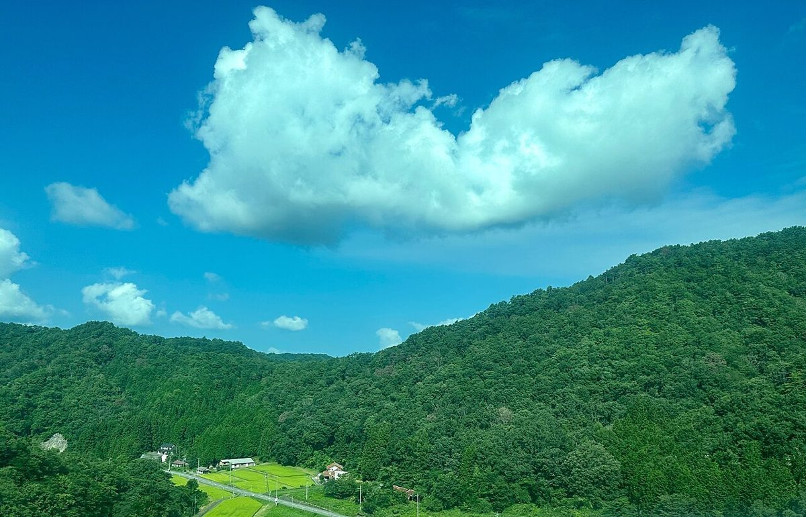
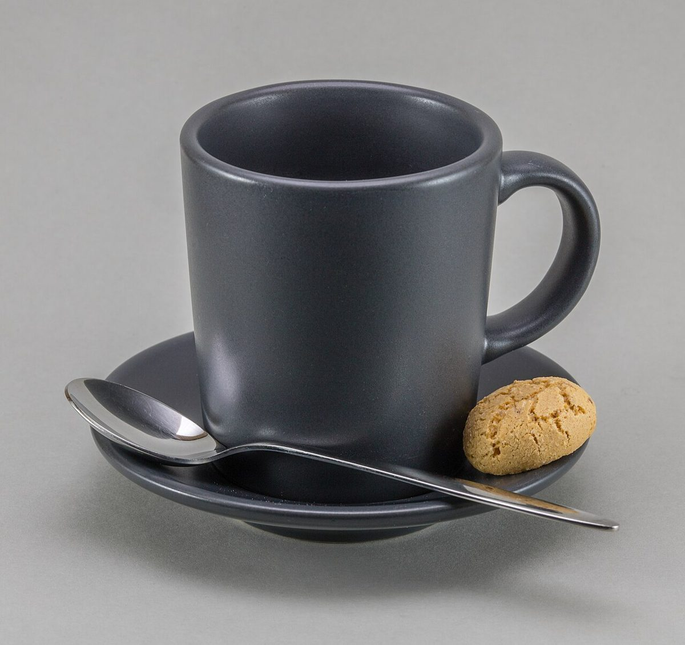
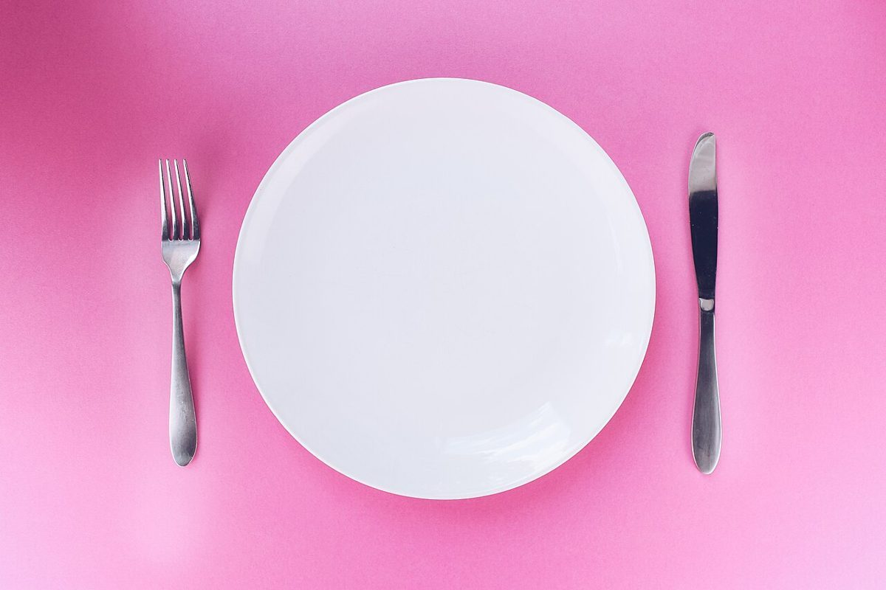

ひと息つく場所、庄原・上原町に。
※タグラインは制作側の案です
Sora cacao lab.
広島県庄原市のカフェ Sora cacao lab.
はじめに
広島県庄原市上原町にあるカフェ、Sora cacao lab.のご案内ページです。
お店の情報は、確認できた情報のみを掲載しています。まだ掲載できていない項目は「準備中」とし、詳しくはお店へ直接お問い合わせいただく形にしています。どうぞお気軽にご覧ください。



ひと息つく場所、庄原・上原町に。
※タグラインは制作側の案です
広島県庄原市のカフェ Sora cacao lab.
はじめに
お店の情報は、確認できた情報のみを掲載しています。まだ掲載できていない項目は「準備中」とし、詳しくはお店へ直接お問い合わせいただく形にしています。どうぞお気軽にご覧ください。


このページは、営業提案のために制作した試作サンプルです。掲載内容は確認できた情報(屋号・所在地・電話番号・Instagram)を除き、仮のものまたは準備中です。ページ内の写真はフリー素材のイメージであり、店舗の実際の様子・商品・設備ではありません。他地域で撮影されたものや、撮影地が不明なものを含みます。